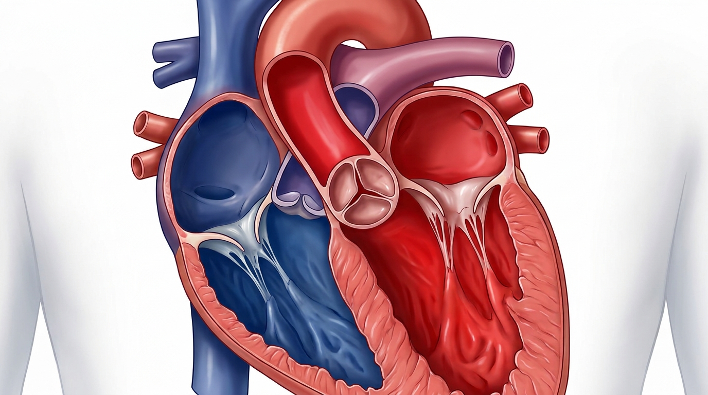

1. Átrio Direito
É uma das quatro câmaras do coração humano. Ele recebe o sangue pobre em oxigênio vindo de todo o corpo pelas veias cavas (superior e inferior) e pelo seio coronário, bombeando-o em seguida para o ventrículo direito pela valva tricúspide.
2. Átrio Esquerdo
É uma das quatro cavidades do coração, localizado na parte superior e posterior. Ele recebe o sangue rico em oxigênio vindo dos pulmões através das veias pulmonares e o bombeia para o ventrículo esquerdo, de onde segue para o resto do corpo.
3. Válvula Aórtica
É uma das quatro válvulas do coração. Ela fica entre o ventrículo esquerdo e a artéria aorta. Sua função é abrir para deixar o sangue rico em oxigênio sair do coração para o corpo e fechar para impedir que o sangue volte.
4. Ventrículo Direito
É uma das quatro câmaras do coração humano. Ele recebe o sangue pobre em oxigênio vindo do átrio direito pela valva tricúspide e o bombeia para a artéria pulmonar pela valva pulmonar.
5. Ventrículo Esquerdo
É uma das quatro câmaras do coração humano. Ele recebe o sangue rico em oxigênio vindo do átrio esquerdo pela valva bicúspide e o bombeia para o resto do corpo através da valva aórtica.